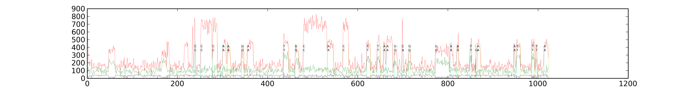
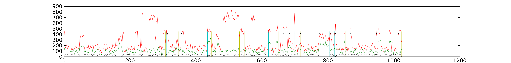

<pre>

goal: update to look at real data.

================================
Looked at squashing data here: /home/UNIXHOME/mbrown/mbrown/workspace2016Q1/sequel-squash/

smrtanalysis/3.0.3

pbalign --verbose --maxHits 1 --nproc 16 \
/home/UNIXHOME/dalexander/Projects/SequelFrenzy/All4Mers-3150005-0026-bakeoff/T2B-mainline-dmeDump/m54004_151201_015904.subreads.bam \
/mnt/secondary/iSmrtanalysis/install/smrtanalysis_2.4.0.140820/common/references/All4mer_V2_44_circular_72x_l50256/sequence/All4mer_V2_44_circular_72x_l50256.fasta \
rt.subreads.all4mer44.bam

/home/UNIXHOME/mbrown/mbrown/workspace2014Q4/broken/errFromBAM.py rt.subreads.all4mer44.bam > rt.subreads.all4mer44.bam.error

----
The trace file:
/pbi/collections/315/3150005/r54004_20151201_015856/1_A01/m54004_151201_015904.trc.h5
from (/home/UNIXHOME/dalexander/Projects/SequelFrenzy/All4Mers-3150005-0026-bakeoff/T2B-mainline-dmeDump/runBasecaller.sh)

================================
Looking at the error file:

query_id	err	numerr	rlen	target_id	targetStart	targetEnd	readStart	readEnd	readLength	alignedLength

m54004_151201_015904/31981753/6_107	0.039604	4	101	All4mer.V2.44_circular_72x_l50256	1250	1349	6	107	101	101
tl.setzmw(31981753, 100)

python tracelabeler-main-squash.py




